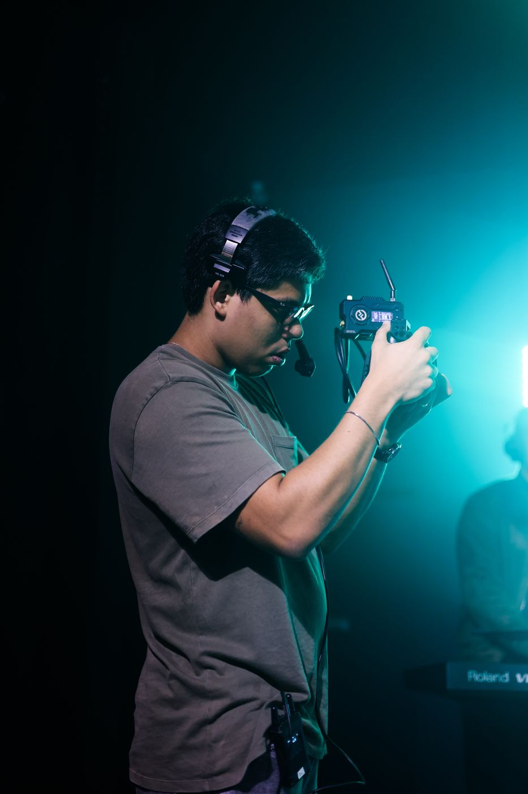
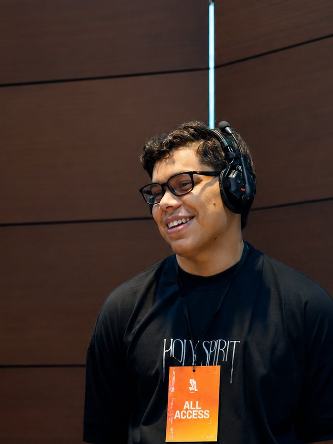

Captação e edição
Vídeos institucionais, depoimentos, campanhas com motion e Reels legendados, do roteiro ao arquivo final.
Histórias filmadas com cuidado.
Filmmaker em Belém do Pará. Eventos, vídeos institucionais, campanhas, podcasts e transmissões ao vivo, da captação ao último corte.
Passe o mouse para ver o vídeo se mexer. Clique para assistir com som.

Sou coordenador de audiovisual e comunicação da Link Church, em Belém. No dia a dia cuido de captação, roteiro, edição, transmissões de cultos e eventos e da equipe técnica que faz tudo isso acontecer.
Fora da igreja, levo a mesma estrutura para marcas, eventos e lives de quem precisa de qualidade sem complicação.


Vídeos institucionais, depoimentos, campanhas com motion e Reels legendados, do roteiro ao arquivo final.
Conferências, cultos e lançamentos registrados com entrega de highlights, aftermovie e cortes para redes.
Lives no YouTube e no Instagram ao mesmo tempo, com duas câmeras, áudio limpo e nomes na tela.

Conte o que você precisa e eu mando uma proposta com valores no mesmo dia.